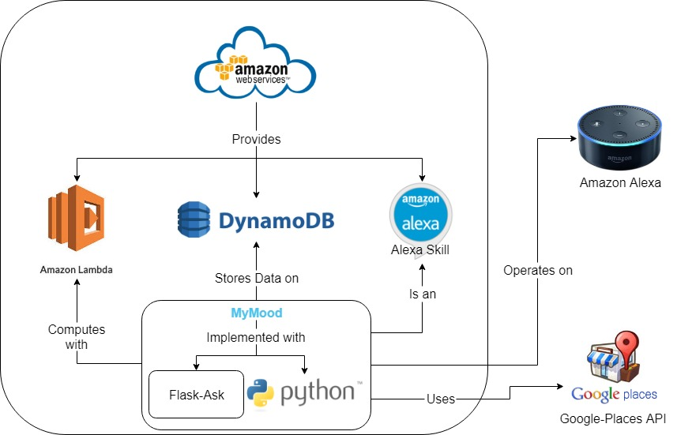

My Mood
Developer's Guide
Project Details
My Mood is an interactive Alexa application that a user can talk about their mood with. The goal of this application is to improve, assess, and get help for the user's mental state.
Features
MyMood has three main features:- Converse with the user to alleviate depression.
- Activated with the Intent trigger "talk about my day".
- Runs the user input through a machine learning model to compute the sentiment.
- Reconfirms computed sentiment analysis with user.
- Provide suggestions or tips if appropriate.
- Diagnose the user for depression with a series of questions.
- Activated with the Intent trigger "take an assessment".
- Questions are based off of the Diagnostic and Statistical Manual of Mental Disorders, 4th Edition.
- Computes using a decision tree constructed based on the "Differential Diagnosis of Mood Disorders" from the manual above.
- Locate a nearby clinic using the set Alexa location in conjunction with Google Places API.
- Activated with the Intent trigger "look for professional help".
- Sends a get request to the Amazon Device Address API if the user has granted authorization.
- Uses the location obtained to retrieve the details of a nearby mental health institute by issuing a series of get requests to Google Places API.
Components
Components Overview Figure
The following is a list of components relevant to MyMood:- Python 3 - General purpose programming language with well maintained machine learning libraries.
- Flask-Ask - A flask extension to create Alexa skills using Python to streamline the development process.
- Amazon Echo - Hardware device also known as Amazon Alexa. The target platform that this application will run on.
- Alexa Skills Kit - API used to create Alexa skills by handling the properties of the skill.
- Amazon Web Services - Provides on-demand cloud computing platforms such as Lambda and DynamoDB.
- Amazon Lambda - Event-driven server-less computing platform used by Alexa skills. It is also used for machine learning model computing.
- Amazon DynamoDB - A NoSQL database service managed on the cloud. Used to gather anonymous interactions as data for researchers and system improvement.
- Google Places API - Provides local clinic information based on the user's location.
On-Boarding Guide
Development Team Guidelines
Scrum Process- Issues are tracked on Waffle.io.
- Sprints start Tuesday morning and end Monday night.
- Developers should attempt to have their tasks completed by Saturday and address feedback by Monday night.
- There are 3 repositories total: Dev Guide & User Manual, Database Interface, and Alexa App.
- Python code should follow the PEP8 style. Use PEP8 online tool if unsure.
- Code should be tested before issuing a pull request.
- Code needs to be reviewed and receive the approval of 2 other developers before being accepted by the project manager.
- There should be 1 commit per task, even if changes were made in response to feedback. This makes issue tracking and bug fixing a lot easier.
E.g. If the task is to add a button to the interface, there should only be 1 commit for it in the commit tree.
Helpful commands:
Use 'git commit --amend --no-edit' to apply your changes to your topmost commit.
Use 'git pull --rebase' to get the latest source code while putting your commits on top.
Use 'git rebase -i' to make changes to a previous commit.
Environment Setup Instructions
Python Environment- Download and Install Anaconda and Spyder.
- Using the Anaconda Prompt:
Check that Python 3.x is installed with 'python --version'.
Use 'conda install python=3.6' and 'conda update python' if it isn't.
Install Flask-Ask framework with 'conda install -c anaconda flask' on the Anaconda Prompt.
- Follow instructions to set up AWS CLI.
- Follow instructions to configure boto3.
- Run create_table() from database.py
- For local testing, get a Google Places API key here.
- Create a config file in your local mymood repository named 'config.py'
- Insert your API key in config.py as API_KEY='YOUR_KEY'
- Download ngrok.
- Run main.py on Spyder.
- Without stopping main.py, run ngrok.exe and enter 'ngrok http 5000'.
- Copy the forwarding endpoint, which looks something like 'https://4986f389.ngrok.io'. Make sure it's the https endpoint.
- Go to Alexa Developer Console and under Build > Endpoint, paste the ngrok https endpoint in default region. Select 'My development endpoint is a subdomain of a domain...' and click 'Save Endpoints'.
- Test through the Developer Console or with your Alexa.
- Terminate main.py and ngrok when you have finished testing.

Contribute
Contributors are always welcome! Here's how you can help:- Maintainers should fork the latest source code to their GitHub repository and submit pull requests.
- The "master" branch contains the most up-to-date source code, which can be found here.
- Development should be done in the "dev" branch.
- If any issues are found, please report or fix them.
- A list of issues can be found here.
- Data is always welcome to improve the machine learning model.
- Textual data with labeled sentiment is preferred.
- Submit compiled data to mymood491@gmail.com.
FAQ
Q: How can I contribute to this application?Q: How do I fork the project to my repository?

Q: Why did the developers opt for Python instead of utilizing Node.js?
Q: How often is the application deployed?
Support
For any issues on the application, please contact us.
Email: mymood491@gmail.com